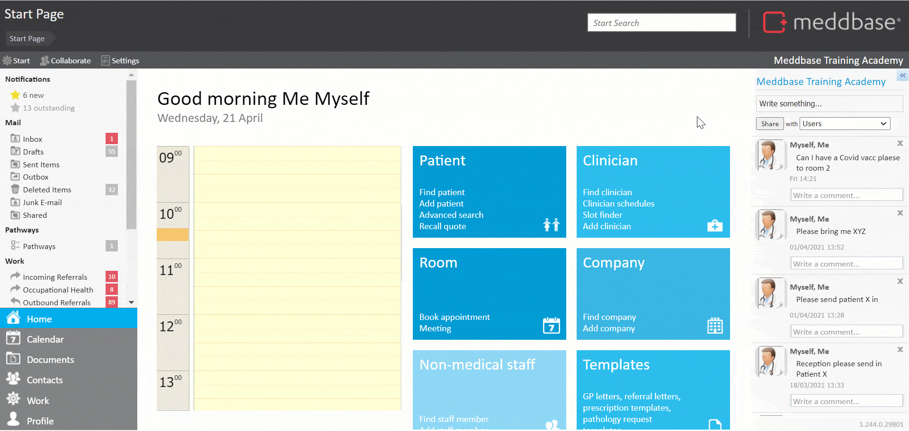
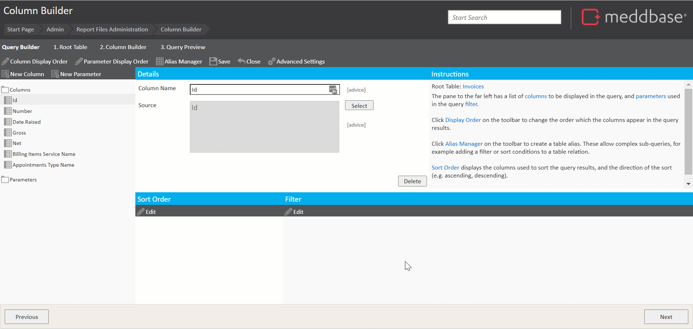
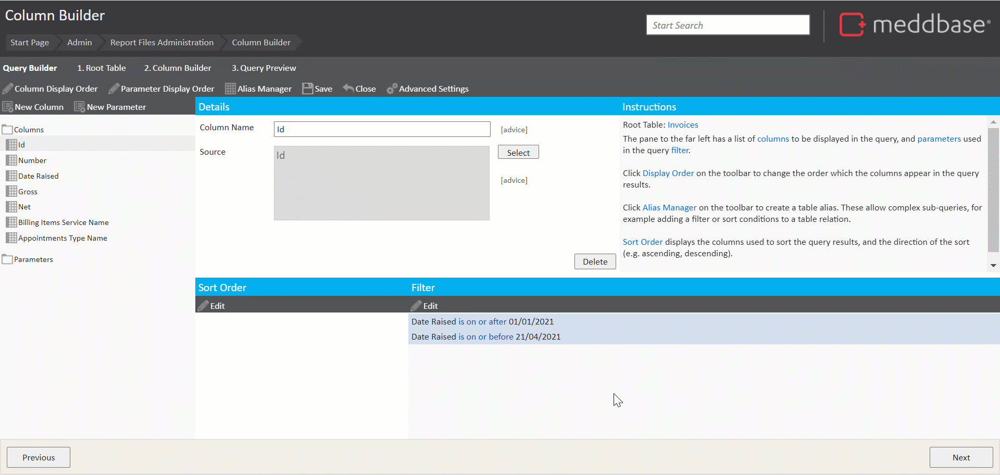
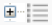
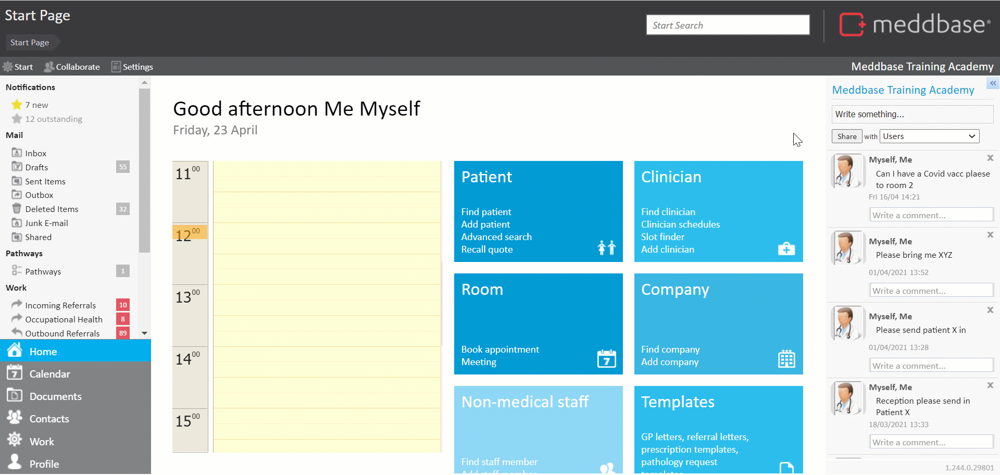

This article will walk you through the process of building a report to show all Invoices raised in a time frame and query the amounts raised and services provided. The report will include filters to only show invoices matching certain criteria, and parameters to let the user choose a date range to filter by as well as aggregates to organise multiple results in columns.
The complexity and time required here are medium.
Click here for other report examples.
The process of building a report can be broken down into the following steps:
1. From the Start Page navigate to Admin > Report management*.
2. Click New report query to open the Query Builder.
3. Select Invoices from the list of tables as the Root Table**.
* Building reports requires access to the Admin section.
**Selecting a Root Table determines what will be displayed in each Row of your report e.g. selecting Invoices as the root table will result in a report displaying an invoice in each row.
Click here for a detailed article on selecting a root table.
4. Click Next to open the Column Builder.
5. In the upper left corner, click New Column and expand the Column folder to add columns to the report*.
For this report you want to include the following columns**:
* Holding down the Ctrl key on your keyboard allows adding multiple columns to a report in a sequence.
** Some of the desired columns do not belong to our root table. They are available in linked tables.
* Using the Date raised or Date sent columns depends on which date you are interested in:
Date raised - this column queries the date and time the invoice was raised.
Date sent - this column queries the date and time the invoice was 'Marked as sent' (finalised); if the invoice has NOT been marked as sent, using this column will return the Date raised value. When using this date, you may also want to add an additional filter to show only Sent invoices.
If the Invoice grouping by account feature (click here for more details about the feature) is switched on on the Creditor's record, the Date sent column will return the time stamp of the last billing item grouped into the invoice via Patient record>Raise bill for products and services.
6. From the Columns folder, add the following:
7. Expand the Billing Items table, open the Columns folder and add:
8. Expand the Appointments table, open the Columns folder and add:
9. Close the Select Column window.

10. Click Save.
11. In the Select Report name dialogue that appears, add in a Report name and click OK*.
* To organise your reports into folders, you can use the following pattern: Folder name/Report name, e.g. Test reports/Report on invoices using aggregate.
In this example, you will narrow down the report results to show invoices raised within a specific time period. To do this, you’ll include some filter conditions.
To add conditions to restrict our list of invoices to a specific time period they were raised in:
1. Click Edit in the Filter section to display the Filter Builder.
2. Click Add Condition, then click Select column or parameter.
3. Highlight the Date Raised column (as this stores the date the invoice was raised) and click Select
4. Change is on to is on or after (this condition states that you only want to show invoices raised on or after a specific date).
5. Include a date in the format DD/MM/YYYY in the empty field next to day.
6. Click Add Condition, then click Select column or parameter.
7. Again, select the Date Raised column and click Select at the bottom of the dialog window.
8. Change is on to is on or before (this condition states that you only want to show invoices raised on or before a specific date).
9. Include a date in the format DD/MM/YYYY in the empty field next to day.
10. Close the Filter Builder*.
11. Then Save your query.
* The Filter Builder includes a Validate filter function, allowing the user to ensure that there are no conflicts or contradicting conditions and the filter is logical.

Ideally, you want the user to be able to input a date range by which to filter. So that they can re-run the report for different criteria.
To do this, you’ll need to parameterise our existing filters. Using parameters lets you choose which values to include in your filter conditions:
1. Click Edit in the Filter section to display the Filter Builder.
2. In the Filter Builder window that appears, for each condition
The parameter is applied to the condition.
* The parameter name is what the user will see next to the field where they need to input a value, so it should be descriptive. You would choose From Date and To Date for the two conditions.
Parameters are mandatory by default, which means the user has to include a value before they can run the report. You can make parameters optional, which means that the report will run without those filters unless specified or provide a default value.
3. Repeat step 2 for further conditions.
4. When Conditions have been set up, click Close in the Filter Builder.
5. Click Next to preview the report
You should be given the option to select a date range to filter by.

Linked tables form 2 type of relations (links) to the Root Table:

e.g. Invoices table (our root table) and Debtor Demographics table, as 1 invoice has 1 debtor, not many
e.g. Invoices table (our root table) and Billing Items table, as 1 invoice can (potentially) include multiple billing items
When using linked tables in a report, you need to take these relations into account. Any column added from a table that has a 1-to-many relation to the Root Table has the potential to return multiple results.
To organise/display these results in our report, the Report Query Builder uses Aggregates.
There are 5 standard Aggregates and 1 advanced Aggregate.
The standard aggregates are:
The advanced aggregate is:
In this example, you want to show all billing items linked to each invoice as well as the appointment type(s) associated with the invoice*
* Depending on the setup, a single invoice may include charges raised from different appointments, so even though you are querying 1 invoice in each row, there may be multiple appointment types associated with each one.
For both Billing Items Service Name and Appointments Type Name columns, you will apply the Combine aggregate to display all possible results in the respective cells. To do this:-
You should be given the option to select a date range to filter by.
The report will show a list of invoices and relevant information, including all billing items and appointment types associated with each invoice.
Once a report is finished and saved, it can be published, so that other Meddbase users can utilize it.
To publish a saved report the following steps apply:
1. From the Start Page navigate to Admin > Report management.
2. Expand the relevant folder on the left-hand pane (Test reports in this case).
3. Click on the report you wish to publish and hit Publish report.
4. Assign a name the report will be published under (you can use the same name the report was saved under).
The report will now be available from the Start Page under the Reports tile. A Meddbase user can now navigate to that section, select the published report and run the query.
The results can be exported to Excel for further analysis by clicking this icon:
